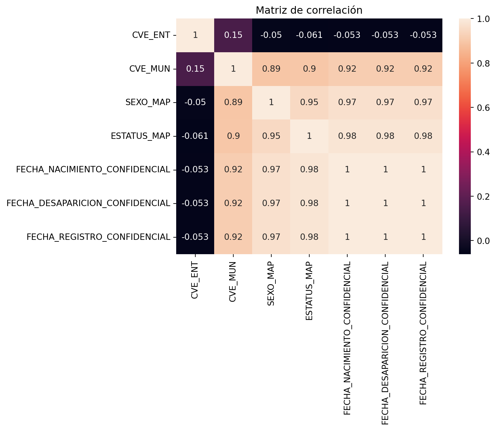
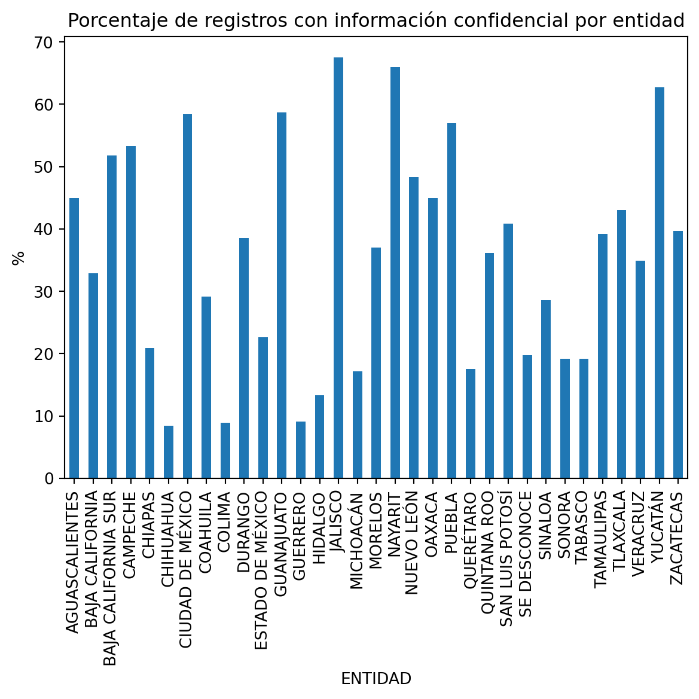
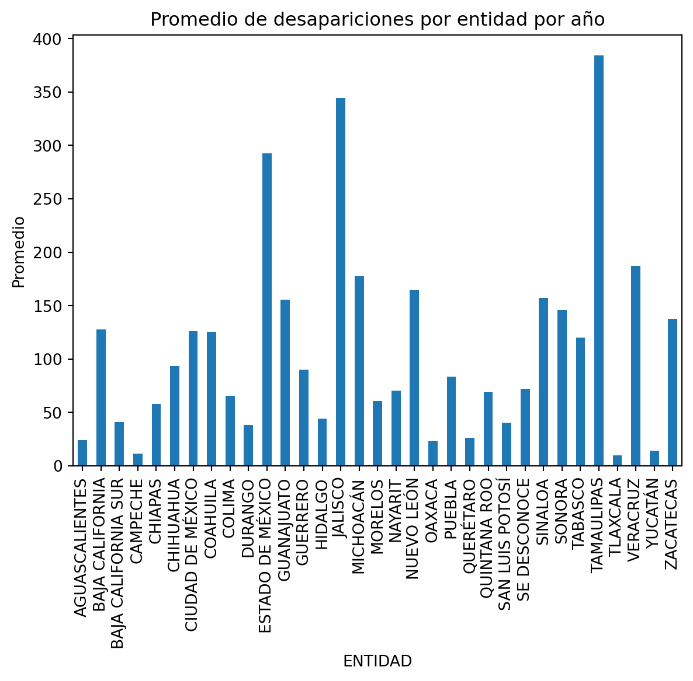
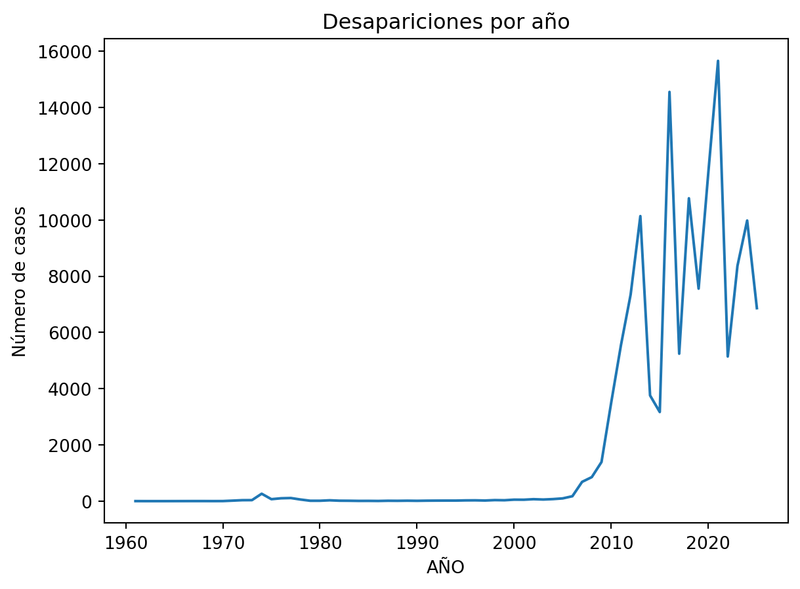
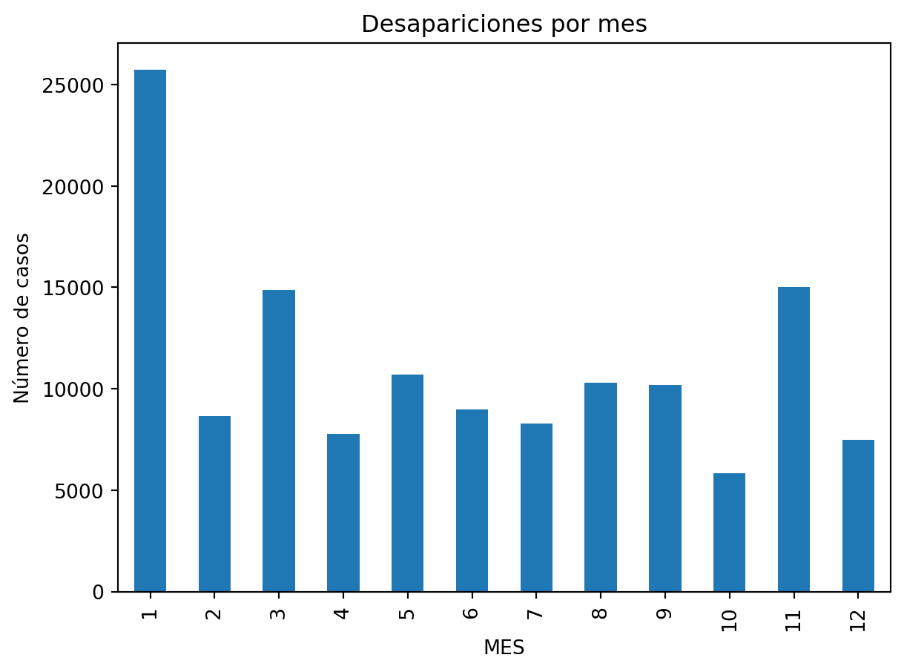
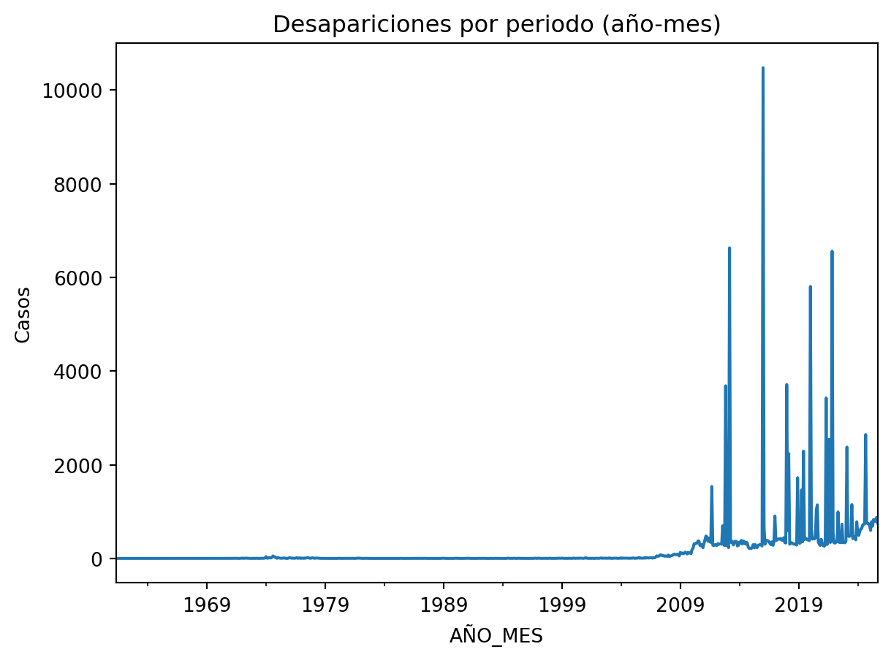

import pandas as pd
import seaborn as sns
import matplotlib.pyplot as pltTarea 2: Personas desaparecidas en México.
Empresa y metodología de Minería de Datos
Emma Alicia Jimenez Sanchez
IBM es una de las empresas más importantes en el ámbito de la analítica de datos y la inteligencia artificial. Para el desarrollo de proyectos de minería de datos, utiliza principalmente la metodología CRISP-DM la cual está integrada en herramientas como SPSS Modeler. https://www.ibm.com/docs/es/spss-modeler/18.6.0?topic=overview-crisp-dm-in-spss-modeler ## Nancy Elena del Valle Vera Google utiliza un enfoque integral y modernizado para la minería y ciencia de datos, centrado en la nube, el aprendizaje automático (ML) y la agilidad, frecuentemente estructurado bajo los principios de MLOps y analítica de datos unificada en Google Cloud https://cloud.google.com/discover/what-is-mlops?hl=es
Leonardo Rafael Ortiz Cervantes
Oracle desarrolla sus innovaciones en minería de datos apoyándose en la metodología CRISP-DM. Esta estructura permite que Oracle Data Mining integre algoritmos avanzados directamente en su base de datos, facilitando la creación de modelos predictivos y la detección de patrones en sus productos. https://academia-lab.com/enciclopedia/mineria-de-datos-de-oracle/?utm_source=copilot.com#google_vignette
Descripción del Dataset
Carga de datos
El data set utilizado en este reporte corresponde al archivo data_secretariado.csv, este contiene información sobre las personas que han sido reportadas como desaparecidas en el país.
Sus caracteristicas se describen a continuación:
DATA_RAW = "../data/raw/data_secretariado.csv"
df = pd.read_csv(DATA_RAW)
print("Filas:", df.shape[0])
print("Columnas:", df.shape[1])Filas: 133887
Columnas: 11Con las siguientes columnnas:
print(df.columns)Index(['ID_VICTIMA', 'ORIGEN_REPORTE', 'FECHA_NACIMIENTO', 'SEXO',
'FECHA_DESAPARICION', 'FECHA_REGISTRO', 'ESTATUS_VICTIMA', 'CVE_ENT',
'ENTIDAD', 'CVE_MUN', 'MUNICIPIO'],
dtype='object')Para analizar el periodo de fechas completo es necesario aislar los valores únicos para centrarnos solo en aquellos que tengan sentido. Más adelante veremos si es necesario eliminar o modificar estos valores para un análisis más preciso.
dfDesaparicion = pd.to_datetime(df["FECHA_DESAPARICION"], dayfirst=True, errors='coerce')
dfRegistro = pd.to_datetime(df["FECHA_REGISTRO"], dayfirst=True, errors='coerce')
print("Las desapariciones van desde "+str(dfDesaparicion.min())+" hasta "+str(dfDesaparicion.max()))
print("Los registros van desde "+str(dfRegistro.min())+" hasta "+str(dfRegistro.max()))Las desapariciones van desde 1961-05-07 12:00:00 hasta 2025-09-30 07:30:00
Los registros van desde 1961-05-08 12:00:00 hasta 2025-10-01 15:18:00C:\Users\Nancy\AppData\Local\Temp\ipykernel_20272\561910658.py:1: UserWarning: Could not infer format, so each element will be parsed individually, falling back to `dateutil`. To ensure parsing is consistent and as-expected, please specify a format.
dfDesaparicion = pd.to_datetime(df["FECHA_DESAPARICION"], dayfirst=True, errors='coerce')
C:\Users\Nancy\AppData\Local\Temp\ipykernel_20272\561910658.py:2: UserWarning: Could not infer format, so each element will be parsed individually, falling back to `dateutil`. To ensure parsing is consistent and as-expected, please specify a format.
dfRegistro = pd.to_datetime(df["FECHA_REGISTRO"], dayfirst=True, errors='coerce')Analizando los primeros registros del dataset, podemos observar que cada uno corresponde a un registro de los reportes de desaparición realizados en cada entidad.
df.head()| ID_VICTIMA | ORIGEN_REPORTE | FECHA_NACIMIENTO | SEXO | FECHA_DESAPARICION | FECHA_REGISTRO | ESTATUS_VICTIMA | CVE_ENT | ENTIDAD | CVE_MUN | MUNICIPIO | |
|---|---|---|---|---|---|---|---|---|---|---|---|
| 0 | D49C001E-41E4-45B7-B8FD-D867578F093E | FISCALIA GENERAL DE DURANGO | CONFIDENCIAL | CONFIDENCIAL | CONFIDENCIAL | CONFIDENCIAL | CONFIDENCIAL | 10 | DURANGO | 999 | CONFIDENCIAL |
| 1 | 2D2B5CD4-7AF7-48C3-887E-72F4C6403863 | COMISION LOCAL DE BUSQUEDA DE PERSONAS DEL EST... | 1971-06-13 | HOMBRE | 2025-09-28 04:40:00 | 2025-09-29 10:00:00 | DESAPARECIDA | 25 | SINALOA | 4 | CONCORDIA |
| 2 | 6AE9098C-0C30-4709-9A2C-37F6312CD43E | PROCURADURIA GENERAL DE JUSTICIA DE LA CIUDAD ... | CONFIDENCIAL | CONFIDENCIAL | CONFIDENCIAL | CONFIDENCIAL | CONFIDENCIAL | 9 | CIUDAD DE MÉXICO | 999 | CONFIDENCIAL |
| 3 | 6B899D2D-F33D-4880-82CD-953FF972B9C3 | FISCALIA GENERAL DEL ESTADO BAJA CALIFORNIA | CONFIDENCIAL | CONFIDENCIAL | CONFIDENCIAL | CONFIDENCIAL | CONFIDENCIAL | 2 | BAJA CALIFORNIA | 999 | CONFIDENCIAL |
| 4 | 3F026638-8169-4CEA-9D9A-E345B6D2D7B6 | FISCALIA GENERAL DEL ESTADO BAJA CALIFORNIA | CONFIDENCIAL | CONFIDENCIAL | CONFIDENCIAL | CONFIDENCIAL | CONFIDENCIAL | 2 | BAJA CALIFORNIA | 999 | CONFIDENCIAL |
Medidad Descriptivas y Análisis Exploratorio de Datos (EDA)
Diccionario de Datos
| Nombre | Descripción | Tipo Dato | Tipo Estadístico |
|---|---|---|---|
| ID_VICTIMA | Id único del registro | string | Nominal |
| ORIGEN_REPORTE | Fiscalía o comision donde se origina el reporte | string | Nominal |
| FECHA_NACIMIENTO | Fecha de nacimiento de la persona reportada como desaparecida | string | Ordinal |
| SEXO | Sexo de la víctima (HOMBRE, CONFIDENCIAL, MUJER, INDERTERMINADO) | string | Nomial |
| FECHA_DESAPARICION | Fecha de desaparición de la víctima | string | Ordinal |
| FECHA_REGISTRO | Fecha de registro de la desaparición en la físcalía | string | Ordinal |
| ESTATUS_VICTIMA | Estatus de la persona desaparecida (DESPARECIDA, CONFIDENCIAL, NO LOCALIZADA) | string | Nominal |
| CVE_ENT | Clave entidad | int64 | Continua |
| ENTIDAD | Fecha del evento de desaparición | string | Nominal |
| CVE_MUN | Clave municipio | int64 | Continua |
| MUNICIPIO | Fecha del evento de desaparición | string | Nominal |
Aplicación de CRISP-DM al dataset asignado
Comprensión del Negocio
El objetivo de este análisis es identificar patrones y características relevantes en los registros de personas desaparecidas en México. Algunas preguntas clave incluyen:
¿En qué periodos se concentran más desapariciones?
¿Qué regiones presentan mayor incidencia?
¿Existen patrones en edad o sexo?
¿Cuál es la tasa de información confidencial por estado?
¿Cuál es el promedio de desapariciones por estado y de acuerdo al estatus?
En las secciones anteriores se ha desglosado un poco de la exploración inicial del data set, identificando los tipos de datos y las principales inconsistencias de tipos en columnas como las de fecha.
Así, al realizar una conteo de valores faltantes notamos que la mayoria se encuentra en las columnas correspondientes a las fechas.
df.isnull().sum()ID_VICTIMA 0
ORIGEN_REPORTE 0
FECHA_NACIMIENTO 28887
SEXO 0
FECHA_DESAPARICION 8160
FECHA_REGISTRO 6097
ESTATUS_VICTIMA 0
CVE_ENT 0
ENTIDAD 0
CVE_MUN 0
MUNICIPIO 0
dtype: int64Los porcentajes correspondientes a cada uno de estos se encuentran a continuación:
(df.isnull().sum() / len(df)) * 100ID_VICTIMA 0.000000
ORIGEN_REPORTE 0.000000
FECHA_NACIMIENTO 21.575657
SEXO 0.000000
FECHA_DESAPARICION 6.094692
FECHA_REGISTRO 4.553840
ESTATUS_VICTIMA 0.000000
CVE_ENT 0.000000
ENTIDAD 0.000000
CVE_MUN 0.000000
MUNICIPIO 0.000000
dtype: float64Lo siguiente es identificar los valores almacenados de manera erronea:
df.dtypesID_VICTIMA object
ORIGEN_REPORTE object
FECHA_NACIMIENTO object
SEXO object
FECHA_DESAPARICION object
FECHA_REGISTRO object
ESTATUS_VICTIMA object
CVE_ENT int64
ENTIDAD object
CVE_MUN int64
MUNICIPIO object
dtype: objectLa mayoria de las columnas aparece con el tipo object lo cual nos indica que puede ser una cadena, diccionario, listas o una mezcla de todo esto. Nos afectará principalmente al tratar de realizar operaciones con las fechas pues, como se vio antes, es necesario convertirlas a datetime para poder calcular la edad aproximada del sujeto.
Revisaremos aquellas columnas que deban tener valores constantes, como sexo, entidad y municipio para detectar valores extraños.
SEXO
df['SEXO'].unique()array(['CONFIDENCIAL', 'HOMBRE', 'MUJER', 'INDETERMINADO'], dtype=object)Se detectaron dos tipo de valores extraños: Confidencial e Indeterminado. Dentro de este dataset hay muchos valores marcados como confidenciales, sin embargo, el uso de Indeterminado puede referirse a un valor perdido como para personas desaparecidas que no caen en la binaridad de género.
ESTATUS_VICTIMA
df['ESTATUS_VICTIMA'].unique()array(['CONFIDENCIAL', 'DESAPARECIDA', 'NO LOCALIZADA'], dtype=object)Como se menciono antes se usa Confidencial para tratar valores reservados, pero notemos que si una persona esta Desaparecida implica que no se le ha localizado, por lo que es redundante tener dos valores categóricas diferentes que significan lo mismo.
ENTIDAD
df['ENTIDAD'].unique()array(['DURANGO', 'SINALOA', 'CIUDAD DE MÉXICO', 'BAJA CALIFORNIA',
'PUEBLA', 'MICHOACÁN', 'GUANAJUATO', 'HIDALGO', 'MORELOS',
'TLAXCALA', 'NAYARIT', 'NUEVO LEÓN', 'SONORA', 'AGUASCALIENTES',
'CAMPECHE', 'CHIHUAHUA', 'QUERÉTARO', 'OAXACA', 'GUERRERO',
'ESTADO DE MÉXICO', 'TAMAULIPAS', 'BAJA CALIFORNIA SUR', 'YUCATÁN',
'ZACATECAS', 'TABASCO', 'JALISCO', 'CHIAPAS', 'VERACRUZ',
'QUINTANA ROO', 'COLIMA', 'COAHUILA', 'SE DESCONOCE',
'SAN LUIS POTOSÍ'], dtype=object)En esta columna se coloca un Se Desconoce para los valores faltantes.
MUNICIPIO
df['MUNICIPIO'].unique()array(['CONFIDENCIAL', 'CONCORDIA', 'PUEBLA', ..., 'TOTATICHE', 'ONAVAS',
'TUBUTAMA'], shape=(1554,), dtype=object)Vuelve a usarse la palabra Confidencial para aquellos datos reservados.
Lo siguiente lograr identificar la existencia de valores duplicados. Además del sexo, fecha de nacimiento y lugar de desaparición no tenemos ningún otro dato extra sobre las victimas, solo una columna id, la cual no se sabe si esta relacionada con otra base de datos que nos de datos más sensibles como el nombre de la persona o solo fue la forma de identificar cada uno de los registros dentro de este data set.
df['ID_VICTIMA'].unique()array(['D49C001E-41E4-45B7-B8FD-D867578F093E',
'2D2B5CD4-7AF7-48C3-887E-72F4C6403863',
'6AE9098C-0C30-4709-9A2C-37F6312CD43E', ...,
'3A125290-FBFA-4EEB-BB2D-5F4B19921FBC',
'C714FA50-1CAA-483F-ABED-BA58883C499C',
'1B66A897-3BB3-45DE-AB9D-49450DCFB545'],
shape=(133887,), dtype=object)Notemos que tenemos exactamente el mismo número de valores únicos en la columna ID_VICTIMA como columnas dentro de la tabla completa. Por la falta de datos que nos indiquen con presición la existencia de duplicados, supondremos que no los hay, de lo contrario podriamos eliminar casos que parecen ser el mismo pero que en realidad no lo son.
Por el análisis pequeño hecho en la primera parte de este reporte, ya sabemos que todas las columnas correspondientes a fechas presentan valores erroneos que no permiten la conversión al tipo datetime de manera automática. Revisamo cada una de las diferentes columnas para tener una clara comprensión de los errores:
Fecha de Nacimiento
df['FECHA_NACIMIENTO'].value_counts().sort_index().head(20)FECHA_NACIMIENTO
0190-05-10 1
0199-08-11 1
0200-03-20 1
0966-01-01 1
0975-05-08 1
0976-11-25 1
0985-07-15 1
0992-10-03 1
0999-06-17 1
1071-02-15 1
1195-09-26 1
1383-05-20 1
1882-08-13 1
1899-12-31 61
1900-01-01 245
1900-02-20 1
1902-01-01 1
1905-05-10 1
1905-06-01 1
1905-06-04 1
Name: count, dtype: int64df['FECHA_NACIMIENTO'].value_counts().sort_index().tail(20)FECHA_NACIMIENTO
2025-01-17 1
2025-02-25 1
2025-04-20 1
2025-05-13 1
2025-05-17 1
2025-05-31 1
2025-06-04 1
2025-06-12 1
2025-06-15 1
2025-07-18 1
2025-07-22 1
2025-08-01 1
2025-08-11 1
2025-08-21 1
2028-03-05 1
2028-12-07 1
2081-03-30 1
2085-01-23 1
3005-08-11 1
CONFIDENCIAL 49149
Name: count, dtype: int64Notemos que en esta columna existen valores con años imposibles, pues nos habla de gente que nacio hace más de un siglo o de personas que ni siquiera han nacido.
Fecha de Desaparición
df['FECHA_DESAPARICION'].value_counts().sort_index().head(20)FECHA_DESAPARICION
1961-05-07 12:00:00 1
1961-11-10 06:00:00 1
1962-10-31 00:00:00 1
1964-03-15 10:00:00 1
1967-01-01 00:00:00 1
1967-01-01 14:00:00 1
1967-05-18 00:00:00 1
1968-01-02 00:00:00 1
1968-05-01 00:00:00 1
1968-08-04 01:00:35 1
1969-01-23 00:00:00 1
1969-05-19 00:00:00 1
1970-08-16 00:00:00 1
1970-09-03 00:00:00 1
1970-10-01 00:00:00 1
1971-01-01 00:00:00 1
1971-01-01 12:00:00 1
1971-05-01 00:00:00 2
1971-05-05 00:00:00 1
1971-06-28 00:00:00 5
Name: count, dtype: int64df['FECHA_DESAPARICION'].value_counts().sort_index().tail(20)FECHA_DESAPARICION
2025-09-28 12:30:00 1
2025-09-28 13:00:00 1
2025-09-28 14:30:00 1
2025-09-28 15:00:00 2
2025-09-28 16:40:00 1
2025-09-28 18:00:00 1
2025-09-28 19:00:00 1
2025-09-28 19:30:00 1
2025-09-28 21:40:00 1
2025-09-28 23:00:00 1
2025-09-29 01:35:00 1
2025-09-29 10:00:00 1
2025-09-29 11:30:00 1
2025-09-29 12:00:00 1
2025-09-29 12:30:00 1
2025-09-29 14:00:00 1
2025-09-29 18:30:00 1
2025-09-29 23:00:00 1
2025-09-30 07:30:00 1
CONFIDENCIAL 49149
Name: count, dtype: int64Dentro de estos datos no se presenta ningún valor fuera de rango.
Fecha de Reporte
df['FECHA_REGISTRO'].value_counts().sort_index().head(20)FECHA_REGISTRO
1961-05-08 12:00:00 1
1961-11-10 07:00:00 1
1962-11-30 00:00:00 1
1964-03-15 10:00:00 1
1966-07-16 12:00:00 1
1966-10-09 10:00:00 1
1968-01-01 00:00:00 1
1968-01-16 08:00:00 1
1968-08-04 01:00:35 1
1969-01-23 00:00:00 1
1969-05-19 00:00:00 1
1969-08-15 00:00:00 1
1970-08-16 00:00:00 1
1971-01-01 12:00:00 1
1971-06-28 00:00:00 1
1971-07-12 19:30:00 1
1971-07-24 00:00:00 1
1971-08-28 12:00:00 2
1972-01-01 00:00:00 1
1972-01-01 08:00:00 1
Name: count, dtype: int64df['FECHA_REGISTRO'].value_counts().sort_index().tail(20)FECHA_REGISTRO
2025-09-29 06:00:00 1
2025-09-29 08:00:00 1
2025-09-29 09:00:00 1
2025-09-29 10:00:00 1
2025-09-29 12:09:00 1
2025-09-29 12:28:00 1
2025-09-29 12:30:00 1
2025-09-29 14:00:00 1
2025-09-29 18:30:00 1
2025-09-29 19:00:00 1
2025-09-29 21:25:00 1
2025-09-29 22:13:00 1
2025-09-29 23:00:00 2
2025-09-30 00:05:00 1
2025-09-30 16:14:00 1
2025-10-01 00:15:00 1
2025-10-01 12:21:00 1
2025-10-01 14:59:00 1
2025-10-01 15:18:00 1
CONFIDENCIAL 49149
Name: count, dtype: int64Dentro de estos datos no se presenta ningún valor fuera de rango.
Así, con esta exploración podemos determinar que, aun cuando existe una mala calidad de datos con un gran número de valores erroneos o incompletos es posible hacer un tratamiento de los mismos para lograr realizar un análisis estadístico completo que nos permita responder las preguntas planteadas.
Data Preparation
Para preparar los datos para el análisis, se aplicarán las siguientes técnicas: Conversión de fechas Dentro del archivo normalizar.py se encuentran las funciones necesarias para corregir los años irregulares dentro de la columna fecha de nacimiento, como la herramienta pandas permite tener años con menos de 4 digitos entonces lo dividimos en dos casos:
Si el año solo tiene 2 digitos y es menor a 26, los dos ultimos digitos del año actual, entonces se le suma este valor a 2000. Si el mayor a 26 se suma al valor 1900.
Si el año tiene 3 digitos entonces revisaremos sus valores inciales, si empieza con 19 se agregará un 0 al final para tener un número entre 1900 y 1990. Si empieza con 20 se hace exactamente lo mismo, pero ahora nos dara un valor entre 2000 y 2990. Si no cae en ninguno de estos dos casos se le suma 1000 al valor.
Después de este proceso se hace una verificación de la cota susperior de los años, verificando que no pasen de cierto año:
Si resulta ser mayor a 2100 se toman los dos ultimos digitos y se reconstruye la fecha para que tenga sentido dentro del siglo XX/XXI
Si esta entre 2026 y 2100 le restamos 100 al valor.
En todos estos casos el resultado de aplicar las operaciones se vuelve el nuevo valor de año. Además, se verifico que para cada víctima la fecha de nacimiento tuviera sentido, tomando como ancla la fecha de desaparición o de registro y restandole 100 para obtener el aproximado de nacimiento. Si no es posible validar la coherencia el valor se marca como nulo.
Finalmente después de todo este proceso, se convierten todos los datos actualizados al tipo datetime y si existe algún error se marca como nulo.
Manejo de Duplicados
Como se indico con anterioridad, por la falta de más información sobre las víctimas se considerará que dentro de este data set no existen duplicados. Pues de otra forma podriamos eliminar información importante para que una persona pueda volver con sus familiares.
Limpieza de texto
Dentro de las variables categóricas no se encontro ninguna necesidad de normalizar el texto, pues no habian errores ortográficos o de puntuación que nos dieran categorías extras repetidas.
A pesar de que en la primera parte de este reporte se menciono que la columna Estatus contaba con dos valores similares desaparecida y no localizada, al no contar con mayor información sobre estas categorías, no pudimos determinar si existía o no una diferencia entre ambas, optando por no procedes con este cambio.
Manejo de valores faltantes
En el archovo input_data.py se imputan los valores para aquellas columnas que presentan valores nulos:
Fecha de Nacimiento: Se calcula la media de esta columna y se remplaza con este a los valores faltantes.
Fecha de Desaparición: Calculamos la mediana por estado y remplazamos con los resultados a los valores faltantes. Si al terminar este proceso siguen habiendo nulos, se remplazan por la mediana global.
Fecha de Registro: Se iguala a la de desaparición.
Modelling
En este caso, el objetivo es realizar un análisis descriptivo y exploratorio, por lo que no se aplicarán modelos predictivos. Sin embargo, dependiendo de los hallazgos, se podrían aplicar técnicas de clustering para identificar grupos de casos similares o modelos de clasificación para predecir el estado de las víctimas.
Correlación
Se generó la matriz de correlación considerando únicamente las variables numéricas del dataset, con el objetivo de identificar relaciones lineales entre ellas.
DATA_IMPUTED = "../data/input_data/data_imputed.csv"
dfImputed = pd.read_csv(DATA_IMPUTED)
corr = dfImputed.corr(numeric_only=True)
plt.figure()
sns.heatmap(corr, annot=True)
plt.title("Matriz de correlación")
plt.show()
Correlaciones Fuertes
corr_unstack = corr.unstack()
# Quitar correlaciones consigo mismo
corr_unstack = corr_unstack[corr_unstack != 1]
# Ordenar
corr_ordenadas = corr_unstack.sort_values(ascending=False)
corr_ordenadas.head(10)FECHA_REGISTRO_CONFIDENCIAL ESTATUS_MAP 0.981052
FECHA_DESAPARICION_CONFIDENCIAL ESTATUS_MAP 0.981052
ESTATUS_MAP FECHA_REGISTRO_CONFIDENCIAL 0.981052
FECHA_NACIMIENTO_CONFIDENCIAL ESTATUS_MAP 0.981052
ESTATUS_MAP FECHA_DESAPARICION_CONFIDENCIAL 0.981052
FECHA_NACIMIENTO_CONFIDENCIAL 0.981052
SEXO_MAP FECHA_NACIMIENTO_CONFIDENCIAL 0.967422
FECHA_DESAPARICION_CONFIDENCIAL SEXO_MAP 0.967422
FECHA_REGISTRO_CONFIDENCIAL SEXO_MAP 0.967422
FECHA_NACIMIENTO_CONFIDENCIAL SEXO_MAP 0.967422
dtype: float64Notemos que alcanzan valores cercanos a 1, sugiriendo que estas variables se encuentran altamente relacionadas posiblemente porque muchas representan información categórica transformada a valores numéricos.
La variable que predomina en estas relaciones es ESTATUS_MAP, la cual corresponde a la representación numérica de la variable categórica ESTATUS. La alta correlación observada con el resto de variables puede explicarse ya que factores como la fecha de desaparición y la fecha de registro influyen en la rapidez con la que se activan los mecanismos de búsqueda.
Correlaciones Débiles
corr_ordenadas.tail(10)CVE_ENT SEXO_MAP -0.050226
SEXO_MAP CVE_ENT -0.050226
FECHA_DESAPARICION_CONFIDENCIAL CVE_ENT -0.053122
CVE_ENT FECHA_NACIMIENTO_CONFIDENCIAL -0.053122
FECHA_DESAPARICION_CONFIDENCIAL -0.053122
FECHA_REGISTRO_CONFIDENCIAL -0.053122
FECHA_REGISTRO_CONFIDENCIAL CVE_ENT -0.053122
FECHA_NACIMIENTO_CONFIDENCIAL CVE_ENT -0.053122
CVE_ENT ESTATUS_MAP -0.060741
ESTATUS_MAP CVE_ENT -0.060741
dtype: float64De entre estas variables la que más se repite es CVE_ENT que corresponde a una clave geográfica de la entidad federativa, por lo que tiene sentido que su codificación numérica no implique ninguna relación con el resto.
Conclusiones
Limitaciones del Análisis
Una de las mayores límitaciones que presenta este análisis es la poca información que se sabe de los casos para lograr determinar con certeza si existen duplicados, pues estos podrian analizar modelos posteriores que se realicen sobre este data set.
Además, la presencia de datos Confidenciales nos impide llegar a análisis profundos de los casos, limitandonos tanto en aspectos de fechas, como de estados, así como conocer si existen personas que ya han sido localizadas.
Hallazgos
Entre los hallazgos que encontramos en este dataset se encuentran:
- Dado que se cuentan con varios datos Confidenciales dentro de las columnas podemos obtener la tasa de los mismos por estado de la siguiente manera:
#Detectamos valores confidenciales en todo el dataset
mask_conf = dfImputed.apply(lambda row: row.astype(str).str.contains("CONFIDENCIAL", case=False, na=False).any(), axis=1)
dfImputed["TIENE_CONFIDENCIAL"] = mask_conf
tasa_conf = dfImputed.groupby("ENTIDAD")["TIENE_CONFIDENCIAL"].mean() * 100
tasa_conf.sort_values(ascending=False)ENTIDAD
JALISCO 67.517386
NAYARIT 66.023362
YUCATÁN 62.700965
GUANAJUATO 58.681277
CIUDAD DE MÉXICO 58.409291
PUEBLA 56.981006
CAMPECHE 53.333333
BAJA CALIFORNIA SUR 51.757812
NUEVO LEÓN 48.315715
AGUASCALIENTES 45.019920
OAXACA 44.966443
TLAXCALA 43.085106
SAN LUIS POTOSÍ 40.853158
ZACATECAS 39.719262
TAMAULIPAS 39.250669
DURANGO 38.519213
MORELOS 37.020429
QUINTANA ROO 36.172765
VERACRUZ 34.916282
BAJA CALIFORNIA 32.894149
COAHUILA 29.119825
SINALOA 28.593087
ESTADO DE MÉXICO 22.594813
CHIAPAS 20.917759
SE DESCONOCE 19.776498
TABASCO 19.186942
SONORA 19.143941
QUERÉTARO 17.569546
MICHOACÁN 17.210349
HIDALGO 13.333333
GUERRERO 9.080616
COLIMA 8.913649
CHIHUAHUA 8.424641
Name: TIENE_CONFIDENCIAL, dtype: float64tasa_conf.plot(kind="bar")
plt.title("Porcentaje de registros con información confidencial por entidad")
plt.ylabel("%")
plt.show()
Donde observamos que la entidad con mayor tasa de confidencialidad es Jalisco y la de menor Chihuahua.
- Para obtener las desapariciones por estado podemos realizar un simple conteo:
dfImputed["ENTIDAD"].value_counts()ENTIDAD
JALISCO 14811
ESTADO DE MÉXICO 14344
TAMAULIPAS 13452
MICHOACÁN 7112
NUEVO LEÓN 7095
VERACRUZ 6928
CIUDAD DE MÉXICO 6802
SINALOA 6596
SONORA 5537
GUANAJUATO 5293
BAJA CALIFORNIA 4478
GUERRERO 4416
CHIHUAHUA 4107
ZACATECAS 3847
COAHUILA 3647
TABASCO 3247
PUEBLA 3001
SE DESCONOCE 2953
MORELOS 2007
NAYARIT 1969
CHIAPAS 1678
QUINTANA ROO 1667
HIDALGO 1590
COLIMA 1436
SAN LUIS POTOSÍ 1219
DURANGO 1067
BAJA CALIFORNIA SUR 1024
OAXACA 745
QUERÉTARO 683
AGUASCALIENTES 502
YUCATÁN 311
TLAXCALA 188
CAMPECHE 135
Name: count, dtype: int64Sin embargo, gracias a que se realizo un proceso exahustivo para la correcta normalización de fechas podemos obtener también el promedio de las desapariciones por año dentro de cada entidad:
#Obtenemos año
fechas = pd.to_datetime(dfImputed["FECHA_DESAPARICION"], errors="coerce")
dfImputed["AÑO"] = fechas.dt.year
conteo = dfImputed.groupby(["ENTIDAD", "AÑO"]).size()
promedio_estado = conteo.groupby("ENTIDAD").mean()
promedio_estado.sort_values(ascending=False)ENTIDAD
TAMAULIPAS 384.342857
JALISCO 344.441860
ESTADO DE MÉXICO 292.734694
VERACRUZ 187.243243
MICHOACÁN 177.800000
NUEVO LEÓN 165.000000
SINALOA 157.047619
GUANAJUATO 155.676471
SONORA 145.710526
ZACATECAS 137.392857
BAJA CALIFORNIA 127.942857
CIUDAD DE MÉXICO 125.962963
COAHUILA 125.758621
TABASCO 120.259259
CHIHUAHUA 93.340909
GUERRERO 90.122449
PUEBLA 83.361111
SE DESCONOCE 72.024390
NAYARIT 70.321429
QUINTANA ROO 69.458333
COLIMA 65.272727
MORELOS 60.818182
CHIAPAS 57.862069
HIDALGO 44.166667
BAJA CALIFORNIA SUR 40.960000
SAN LUIS POTOSÍ 40.633333
DURANGO 38.107143
QUERÉTARO 26.269231
AGUASCALIENTES 23.904762
OAXACA 23.281250
YUCATÁN 14.136364
CAMPECHE 11.250000
TLAXCALA 9.894737
dtype: float64promedio_estado.plot(kind="bar")
plt.title("Promedio de desapariciones por entidad por año")
plt.ylabel("Promedio")
plt.show()
Donde el que presenta mayor promedio de desapariciones es Tamaulipas y el de menor es Tlaxcala.
- A su vez también podemos obtener la edad promedio de todas las personas registradas como desaparecidas:
dfImputed["FECHA_NACIMIENTO"] = pd.to_datetime(dfImputed["FECHA_NACIMIENTO"], errors="coerce")
dfImputed["FECHA_DESAPARICION"] = pd.to_datetime(dfImputed["FECHA_DESAPARICION"], errors="coerce")
dfImputed["EDAD"] = (dfImputed["FECHA_DESAPARICION"] - dfImputed["FECHA_NACIMIENTO"]).dt.days / 365
promedioEdad = dfImputed["EDAD"].mean()
print(f"La edad promedio de desaparición es {promedioEdad:.2f}")La edad promedio de desaparición es 31.27- A su vez, podemos obtener este promedio por cada una de las entidades:
dfImputed.groupby("ENTIDAD")["EDAD"].mean()ENTIDAD
AGUASCALIENTES 31.112880
BAJA CALIFORNIA 34.563895
BAJA CALIFORNIA SUR 34.005875
CAMPECHE 36.440507
CHIAPAS 31.992261
CHIHUAHUA 31.423624
CIUDAD DE MÉXICO 32.924057
COAHUILA 27.636383
COLIMA 31.246476
DURANGO 28.382049
ESTADO DE MÉXICO 30.402811
GUANAJUATO 33.597578
GUERRERO 27.046651
HIDALGO 30.349885
JALISCO 29.721479
MICHOACÁN 32.418490
MORELOS 43.016163
NAYARIT 32.417105
NUEVO LEÓN 28.010326
OAXACA 33.037400
PUEBLA 34.846584
QUERÉTARO 33.511743
QUINTANA ROO 33.566394
SAN LUIS POTOSÍ 33.198528
SE DESCONOCE 32.533088
SINALOA 31.824365
SONORA 32.457570
TABASCO 34.065467
TAMAULIPAS 28.384738
TLAXCALA 32.411177
VERACRUZ 32.220902
YUCATÁN 35.598551
ZACATECAS 32.718346
Name: EDAD, dtype: float64- Dado los periodos de tiempo que abarca este data set, podemos calcular la tasa de desapariciones por diferentes periodos de tiempo. Primero lo abordaremos por años:
fechas = pd.to_datetime(dfImputed["FECHA_DESAPARICION"], errors="coerce")
dfImputed["AÑO"] = fechas.dt.year
desapariciones_por_año = dfImputed["AÑO"].value_counts().sort_index()
desapariciones_por_añoAÑO
1961 2
1962 1
1964 1
1967 3
1968 3
...
2021 15657
2022 5144
2023 8367
2024 9979
2025 6862
Name: count, Length: 62, dtype: int64desapariciones_por_año.plot(kind="line")
plt.title("Desapariciones por año")
plt.ylabel("Número de casos")
plt.show()
Notemos que el número de desapariciones es bastante bajo antes de la decada de los 2010’s pero tiene sus primeros picos altos durante esta decada e inicios de los 2020.
- El anterior análisis puede abordarse también por mes de la siguiente manera:
dfImputed["MES"] = fechas.dt.month
desapariciones_por_mes = dfImputed["MES"].value_counts().sort_index()
desapariciones_por_mesMES
1 25749
2 8657
3 14885
4 7761
5 10709
6 8970
7 8287
8 10308
9 10193
10 5852
11 15026
12 7490
Name: count, dtype: int64desapariciones_por_mes.plot(kind="bar")
plt.title("Desapariciones por mes")
plt.ylabel("Número de casos")
plt.show()
El mes donde más numero de gente se reporta como desaparecida es Enero y en el que menor número de casos hay Octubre.
- Y el realizar un análisis tanto por año como por mes nos arroja las siguientes observaciones:
dfImputed["AÑO_MES"] = fechas.dt.to_period("M")
periodos = dfImputed["AÑO_MES"].value_counts().sort_index()
periodosAÑO_MES
1961-05 1
1961-11 1
1962-10 1
1964-03 1
1967-01 2
...
2025-05 831
2025-06 827
2025-07 790
2025-08 876
2025-09 759
Freq: M, Name: count, Length: 583, dtype: int64periodos.plot(kind="line")
plt.title("Desapariciones por periodo (año-mes)")
plt.ylabel("Casos")
plt.show()
Aunque la tabla nos da la información compacta de todos los datos, al ordenar podemos obtener el año junto con el mes de los mayores reportes siendo este Enero del 2016.
periodos.sort_values(ascending=False).head(10)AÑO_MES
2016-01 10477
2013-03 6633
2021-11 6562
2020-01 5808
2018-01 3714
2012-11 3687
2021-05 3428
2024-09 2646
2021-08 2544
2023-02 2378
Freq: M, Name: count, dtype: int64Y si obtenemos los últimos valores de este orden, veremos que los años con el menor número de reportes son alrededor de los años 60’s y 70’s.
periodos.sort_values(ascending=False).tail(10)AÑO_MES
1975-11 1
1975-09 1
1972-02 1
1972-12 1
1973-02 1
1973-05 1
1973-07 1
1962-10 1
1961-11 1
1961-05 1
Freq: M, Name: count, dtype: int64